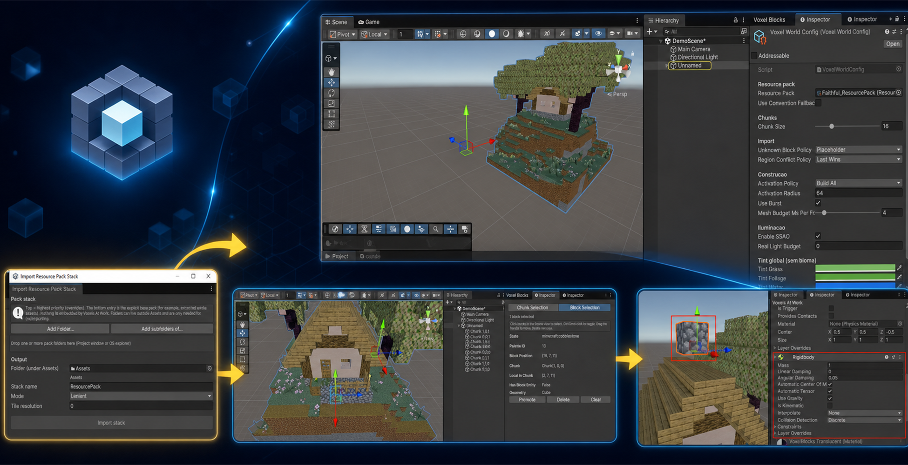
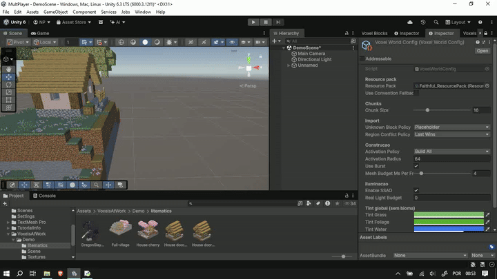

Native Litematic workflow
Import .litematic files as inspectable Unity assets with metadata, thumbnails, drag-and-drop Scene previews, and reproducible runtime loading.

Voxels At Work imports .litematic schematics as live Unity worlds—chunked, editable per block, driven by your resource packs, and built for both the Editor and runtime.
The imported file becomes data. Meshes, colliders, promoted prefabs, saves, and network deltas are derived from that source of truth.
Import .litematic files as inspectable Unity assets with metadata, thumbnails, drag-and-drop Scene previews, and reproducible runtime loading.
Compile Minecraft-format blockstates, models, and textures into persistent Unity assets. Stack a complete base with project-specific overrides.
Select, move, delete, and promote blocks in the Scene view—or use a focused API with batches, undo, redo, events, and coordinate conversion.
Replay authoring history, save runtime snapshots or compact deltas, and add optional Netcode for GameObjects synchronization when needed.
A guided Editor workflow gets a configured voxel world into the scene without hiding the systems underneath it.
Compile the resource pack stack into block, texture, and metadata assets.
Choose chunk, activation, meshing, and unknown-block behavior.
Drag the imported asset into the Scene to create a ready loader.
Preview now, enter Play Mode, and keep every block available to your game.
From drag-and-drop setup to visual edits and physics-ready promoted entities.



Follow the quick start, inspect every workflow, and copy production-ready API examples.